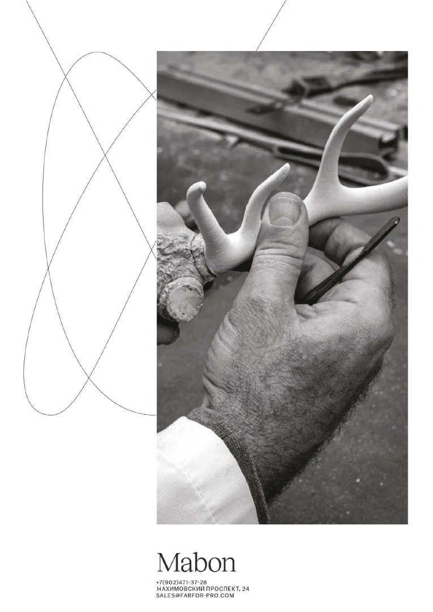
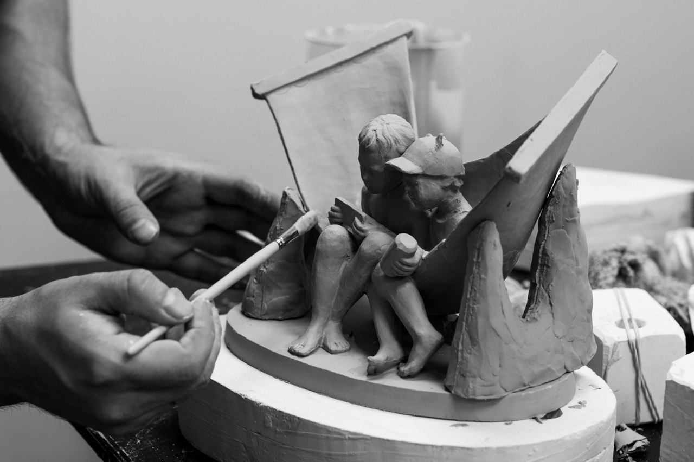
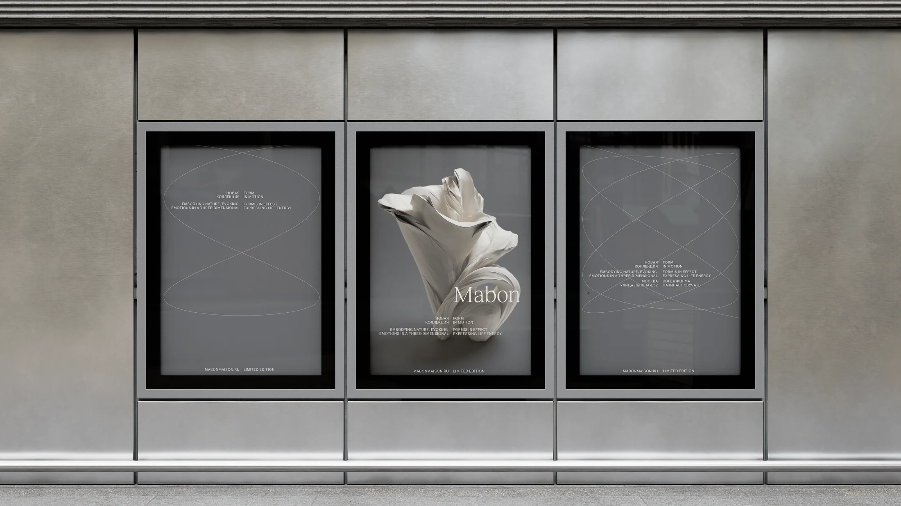
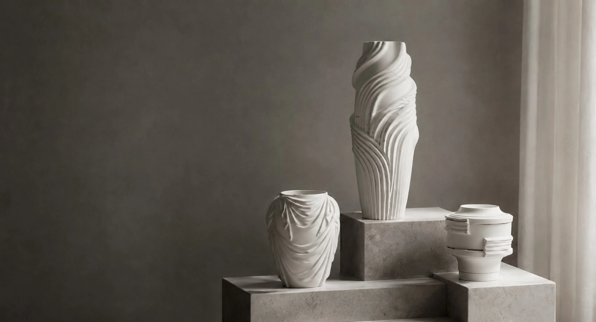
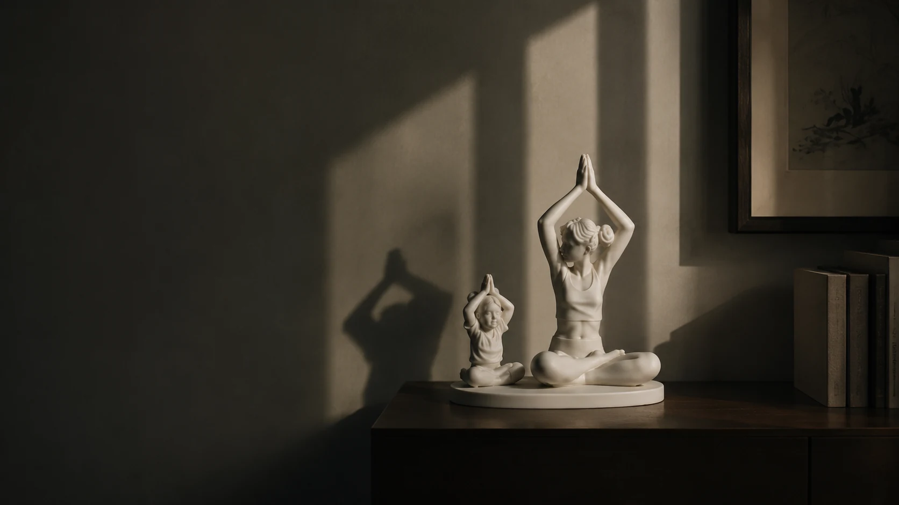
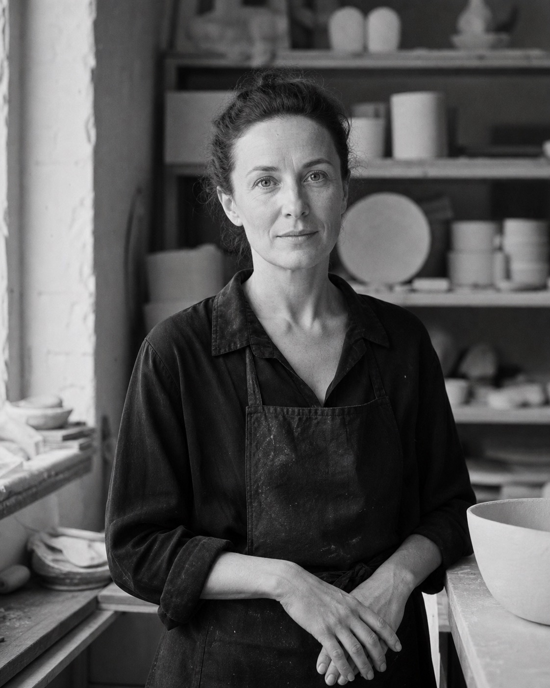
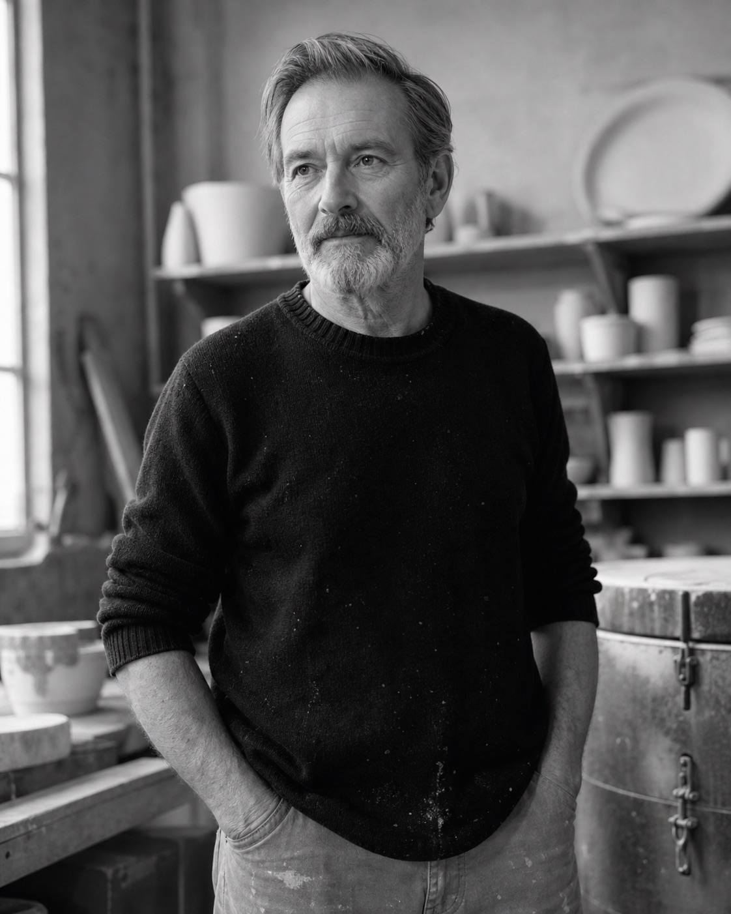
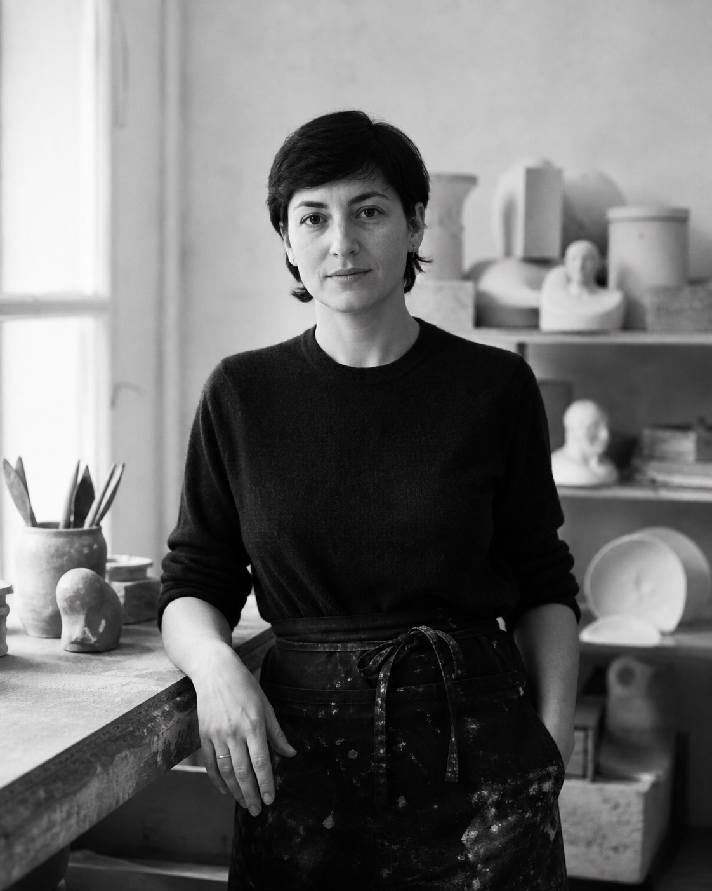
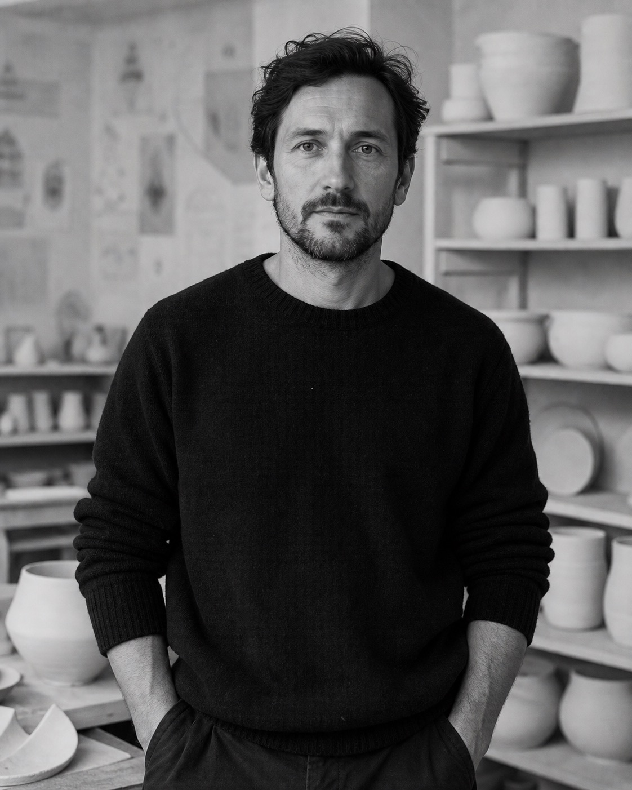
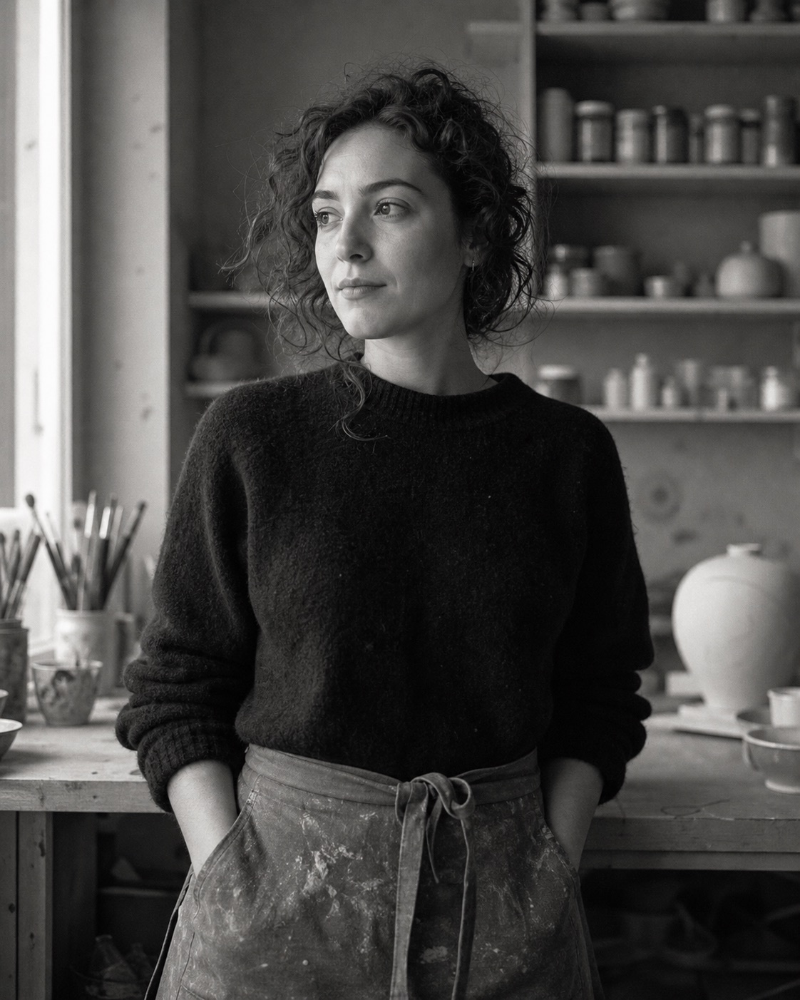

01Модель и форма
Скульптор уточняет пластику и создаёт гипсовую форму для будущего объекта.

Москва · с 2016 года
Mabon / манифест
Мы создаём керамику как тихое присутствие в доме — предметы, в которых точность ремесла сохраняет тепло рук, а материал продолжает жить рядом с человеком.
«Фарфор — это диалог между землёй, огнём и человеком».
От мастерской к бренду
Mabon вырос из небольшой московской мастерской, где скульпторы и технологи искали современный язык для классического фарфора. Первые объекты создавались медленно — через десятки эскизов, проб и обжигов.
Сегодня мы по-прежнему сохраняем этот ритм: соединяем ремесленную точность с живой пластикой формы и выпускаем небольшие серии, в которых чувствуется авторский жест.

Четыре этапа
Каждый объект проходит через руки мастеров и сохраняет едва заметные следы живой работы.

01Скульптор уточняет пластику и создаёт гипсовую форму для будущего объекта.
Жидкий фарфор набирает толщину в форме, после чего изделие медленно высыхает.

03Поверхность получает глубину и свет через ручное нанесение прозрачной глазури.

04Высокая температура завершает превращение материала и раскрывает финальный оттенок.
Люди мастерской
Мастера, дизайнеры и художники, объединённые вниманием к материалу и каждой детали.




